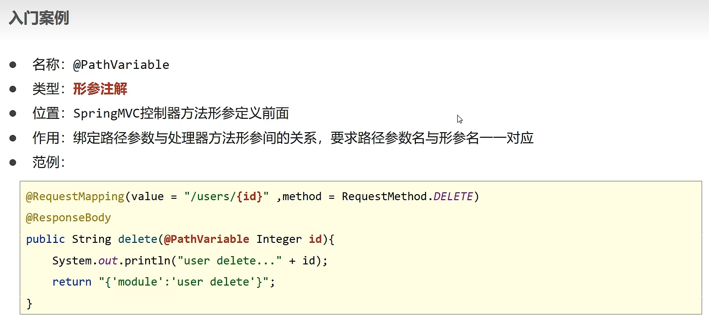

理解 Rest 是什么，Rest 的优缺点，以及 Rest 的四个动作（增、删、查、改）的格式，
# Rest 是什么
表述性状态转移是一组架构约束条件和原则。满足这些约束条件和原则的应用程序或设计就是 RESTful。需要注意的是，REST 是设计风格而不是标准。REST 通常基于使用 HTTP，URI，和 XML（标准通用标记语言下的一个子集）以及 HTML（标准通用标记语言下的一个应用）这些现有的广泛流行的协议和标准。
# Rest 风格描述形式的优点

明显看到，传统风格对于访问资源的行为并无隐藏，同时，其格式相较 Rest 来说更加的复杂，杂乱而不统一。
# Rest 的四个动作格式

# Rest 入门案例
# 初始注解开发
举个栗子
@Controller | |
@ResponseBody配置在类上可以简化配置，表示设置当前每个方法的返回值都作为响应体 | |
//@ResponseBody | |
//@RestController // 使用 @RestController 注解替换 @Controller 与 @ResponseBody 注解，简化书写 | |
@RequestMapping("/books") | |
public class BookController { | |
@RequestMapping( method = RequestMethod.POST) | |
public String save(@RequestBody Book book){ | |
System.out.println("book save..." + book); | |
return "{'module':'book save'}"; | |
} | |
@RequestMapping(value = "/{id}" ,method = RequestMethod.DELETE) | |
// @DeleteMapping ("/{id}") // 使用 @DeleteMapping 简化 DELETE 请求方法对应的映射配置 | |
public String delete(@PathVariable Integer id){ | |
System.out.println("book delete..." + id); | |
return "{'module':'book delete'}"; | |
} | |
@RequestMapping(method = RequestMethod.PUT) | |
// @PutMapping // 使用 @PutMapping 简化 Put 请求方法对应的映射配置 | |
public String update(@RequestBody Book book){ | |
System.out.println("book update..."+book); | |
return "{'module':'book update'}"; | |
} | |
@RequestMapping(value = "/{id}" ,method = RequestMethod.GET) | |
// @GetMapping ("/{id}") // 使用 @GetMapping 简化 GET 请求方法对应的映射配置 | |
public String getById(@PathVariable Integer id){ | |
System.out.println("book getById..."+id); | |
return "{'module':'book getById'}"; | |
} | |
@RequestMapping(method = RequestMethod.GET) | |
// @GetMapping // 使用 @GetMapping 简化 GET 请求方法对应的映射配置 | |
public String getAll(){ | |
System.out.println("book getAll..."); | |
return "{'module':'book getAll'}"; | |
} | |
} |
# 优化注解开发
@RestController 注解包含了 @Controller 与 @ResponseBody 注解，实现简化书写
# @RequestMapping 优化
增
@RequestMapping( method = RequestMethod.POST)=>@PostMapping删
@RequestMapping(value = "/{id}" ,method = RequestMethod.DELETE)=>@DeleteMapping("/{id}")改
@RequestMapping(method = RequestMethod.PUT)=>@PutMapping查
@RequestMapping(value = "/{id}" ,method = RequestMethod.GET)=>@GetMapping("/{id}")
// 标准 REST 风格控制器开发 | |
@RestController | |
@RequestMapping("/books") | |
public class BookController2 { | |
@PostMapping | |
public String save(@RequestBody Book book){ | |
System.out.println("book save..." + book); | |
return "{'module':'book save'}"; | |
} | |
@DeleteMapping("/{id}") | |
public String delete(@PathVariable Integer id){ | |
System.out.println("book delete..." + id); | |
return "{'module':'book delete'}"; | |
} | |
@PutMapping | |
public String update(@RequestBody Book book){ | |
System.out.println("book update..."+book); | |
return "{'module':'book update'}"; | |
} | |
@GetMapping("/{id}") | |
public String getById(@PathVariable Integer id){ | |
System.out.println("book getById..."+id); | |
return "{'module':'book getById'}"; | |
} | |
@GetMapping | |
public String getAll(){ | |
System.out.println("book getAll..."); | |
return "{'module':'book getAll'}"; | |
} | |
} |
# 注解理解
# PathVariable

# 注解选择